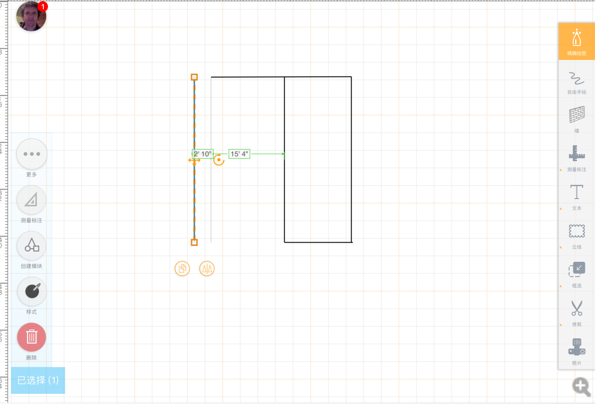

一、可自由绘制单线，线可自由拖动、线可拉长拉短、线可被拆分、绘制单线是旁侧有标注显示，有角度显示（参考下方实例图）


waht？🐷

实现说明：
1、画布初始时有测量点跟虚线，也可在其他位置绘制线条（线条有上下左右控制按钮）
2、可手动绘制，也可通过测距仪返回的数据，在画布自动绘制出线条（线条会自动拐角，就一代最开始那样子）
3、可选中墙线进行拖动
4、画线时显示长度标注、显示角度
（上下左右，还有测量按钮有空可做，后续迭代版本要用到的）
测量
waht？🐷
测量
线的移动、长短拉伸、捏合、拆分参考下arcsite软件的逻辑(下面我抄袭的截图，慢慢欣赏)

线条标注参考这样的，点击中间数值，弹出我们小键盘进行测量
线条水平校准功能（你懂的）

线可自由的拖动，哪怕是闭合区域，也可拖走（只要当前区域不是封闭的空间，那么不用计算面积那些）
选中线两侧端点都是有个小矩形，有来做端点捕捉用的
线的拉伸、点的捕捉（点击看小视频）
1、定位功能：在一条线再绘制一条垂直的线
2、选中该线，显示本身的的标注 还有垂直线的特殊标注
3、更改特殊标注数据可以移动 该线位置
（具体参考视频）
房间区域修改规则


假设更改底部墙线，其他有房间线条整体长度不会受到影响
如果所有关联到的墙体全有房间，那么更改最后绘制那条墙线的长度（平行的就改对应平行的，垂直就稿垂直）
其他要求
数据可以同步到后台跟酷家乐，可以从破服务器拉取下载